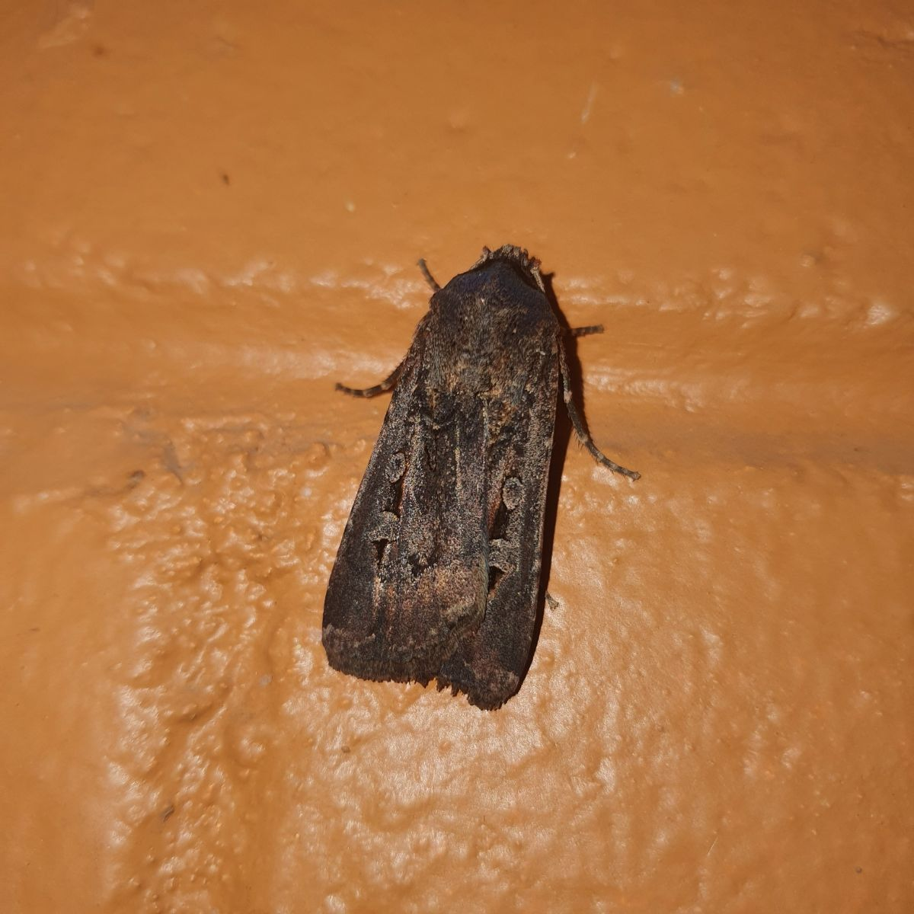

ავსტრალიური ჩრჩილი მიგრაციისას დედამიწის მაგნიტურ ველს კომპასად იყენებს

ავსტრალიურ ბოგონგის ჩრჩილს ბრინჯის მარცვლის მეათედის ზომის ტვინი აქვს, მაგრამ ყოველ ზაფხულს ღამით 1 000 კილომეტრზე მეტს დაფრინავს. მიზანი ავსტრალიის სნოუი-მაუნტინსში მდებარე გრილი გამოქვაბულებია, სადაც ჩრჩილი აქამდე არასდროს ყოფილა. 2025 წელს ლუნდის უნივერსიტეტის მკვლევრებმა აჩვენეს, რომ ის ირმის ნახტომის ვარსკვლავებით ორიენტირდება. ახლა დადგინდა, რომ ჩრჩილს მაგნიტური კომპასიც აქვს. ის დედამიწის მაგნიტურ ველსა და მიწას შორის კუთხეს იყენებს. ექსპერიმენტში მკვლევრებმა მაგნიტური ველი შეაბრუნეს და ჩრჩილებიც შესაბამის მხარეს შებრუნდნენ. კვლევა ჟურნალ „Nature“-ში გამოქვეყნდა.
წყარო: Nature · ორიგინალი ამბავი